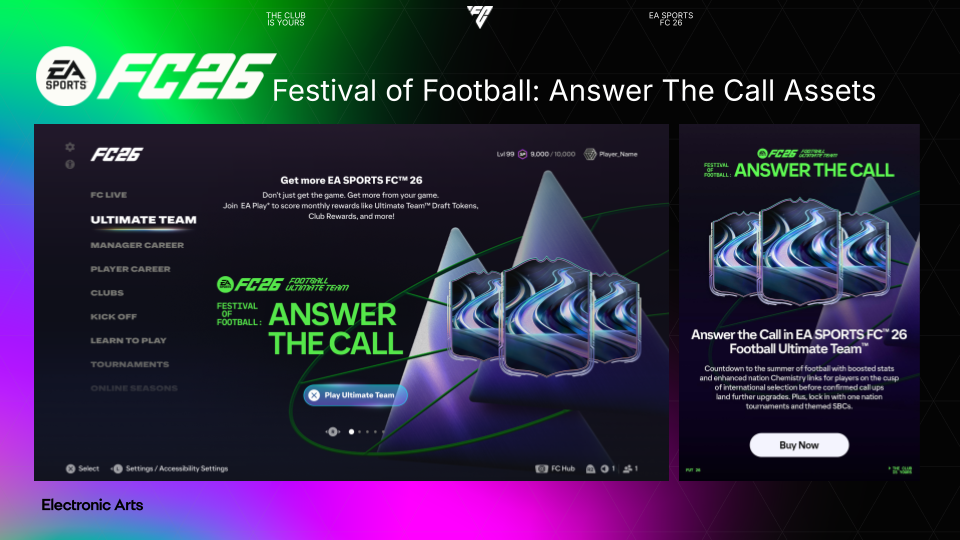
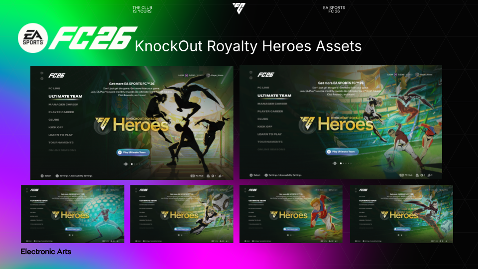
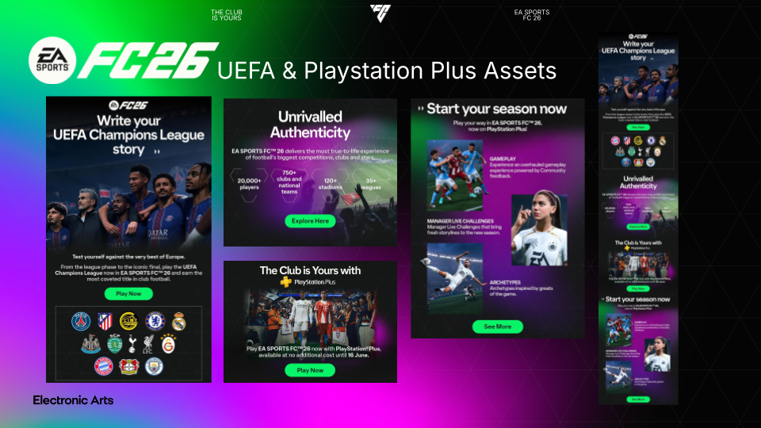
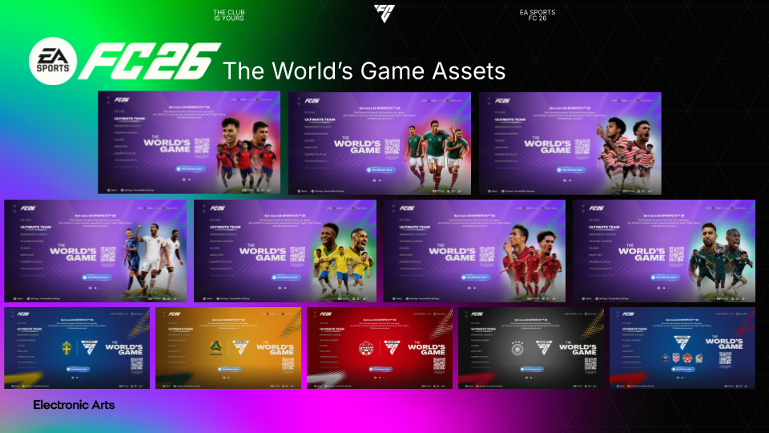
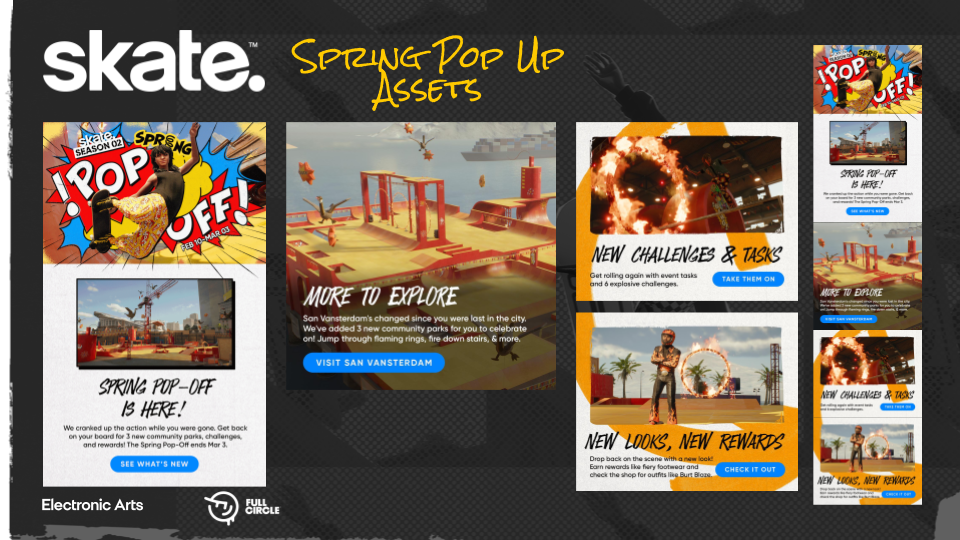
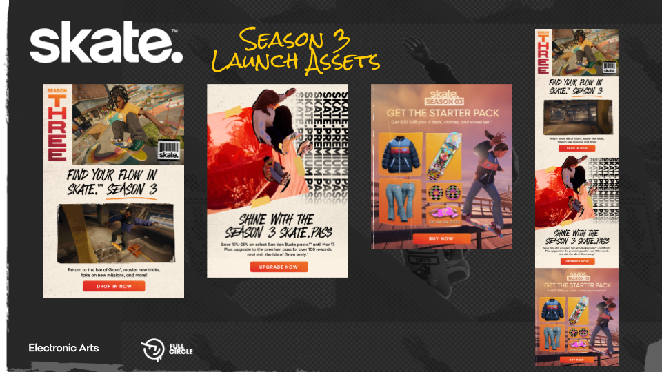
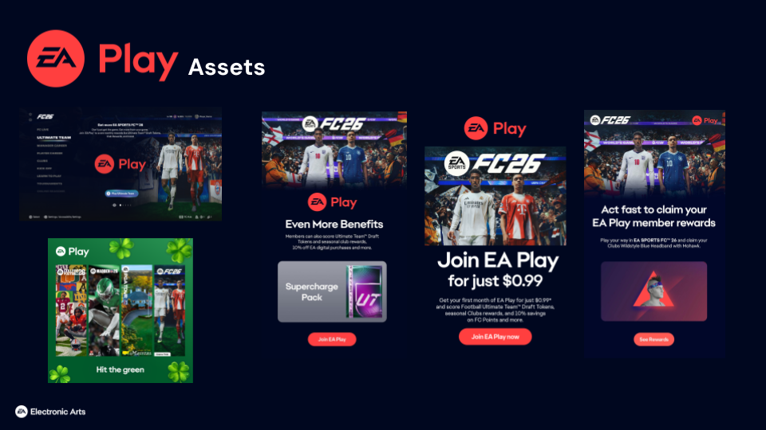

Work at Electronic Arts
I coordinate the planning, creation and delivery of CRM email content and in-game advertising across multiple EA franchises, with a primary focus on EA SPORTS FC. I work closely with multiple teams to define campaign requirements, gather creative assets and produce detailed briefs for designers. Throughout the production process I collaborate with Brand, CRM, Legal, external licensors and localisation teams to ensure all content meets brand guidelines, secures the necessary approvals and is delivered on schedule.
EA Sports FC26
I primarily supporting EA SPORTS FC 26 by coordinating the creation and delivery of CRM email campaigns and in-game marketing assets. Working within extremely fast-paced production cycles, with most campaigns requiring delivery within just two to three days, I collaborated with a wide range of cross-functional teams including CRM, Brand, Legal, Localisation, Design and external licensors across multiple time zones. Each project began with the CRM team defining the campaign objectives, target audience and key messaging, after which I was responsible for sourcing the appropriate creative assets, producing content layouts, creating detailed design briefs and managing the asset production process from concept through to delivery. Throughout development, I ensured all content adhered to the EA SPORTS FC Brand Toolkit, maintaining consistency with brand guidelines while coordinating approvals from Brand and Legal teams. Many campaigns also featured licensed club crests, player imagery and other third-party intellectual property, requiring close communication with external licensors to obtain the necessary usage rights before publication. Alongside managing stakeholder feedback and localisation requirements for global audiences, I continuously monitored project progress, identified potential risks and approval bottlenecks, and proactively resolved issues to keep campaigns on schedule. The role demanded exceptional organisation, clear communication and strong project management skills to successfully deliver high-quality marketing assets within tight deadlines while ensuring compliance with branding, legal and licensing requirements.




Skate
I played a key role in establishing the CRM content production workflow for Skate. As the franchise had an existing creative production process that was not designed around CRM requirements, I worked to translate and adapt that workflow into one that could effectively support email marketing campaigns. This involved collaborating with stakeholders to understand the existing asset pipeline, identifying how creative assets and branding could be repurposed for CRM, and determining how the Skate visual toolkit could be applied within email templates while maintaining brand consistency. To validate the new approach, I created two complete email campaigns, demonstrating how the toolkit could be successfully utilised within the CRM channel. I also documented the end-to-end process, producing guidance for the wider team to ensure future campaigns could be delivered consistently and efficiently. This work not only helped establish a repeatable workflow for Skate CRM campaigns but also improved knowledge sharing across the team and reduced onboarding time for future content production.


EA Play
I also provided production support for EA Play, stepping in whenever the team experienced high workloads or colleagues were out of office. This required me to quickly adapt to different campaigns and marketing channels, contributing to the creation and delivery of social media content, in-game messaging and CRM email campaigns. Working across multiple channels gave me a broader understanding of EA's marketing ecosystem and reinforced my ability to work efficiently under pressure while maintaining consistent branding and quality standards. By being able to integrate into different projects at short notice, I helped ensure campaign delivery remained on track and deadlines were met despite changing team capacity and priorities.
